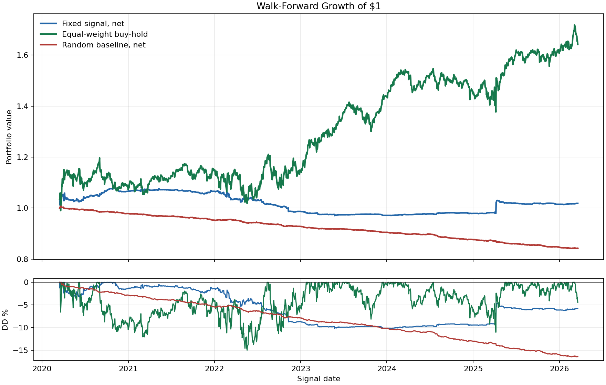
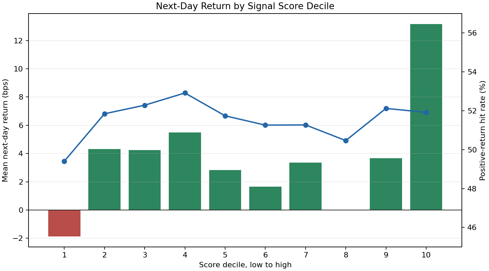
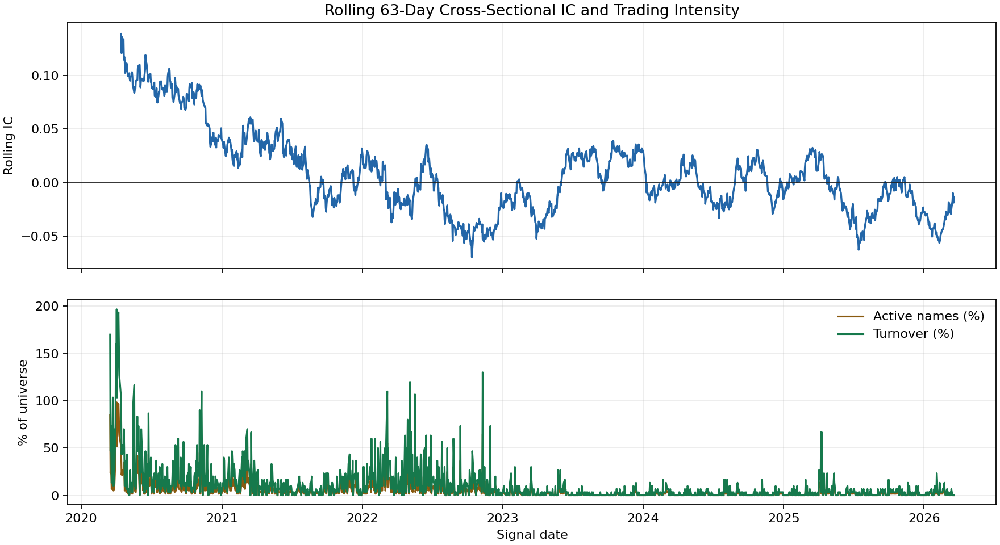

AXIOM Quant Research Portfolio
A research-grade case study in turning an overfit equity-signal prototype into a disciplined validation workflow: causal features, purged walk-forward testing, explicit execution costs, baseline comparison, and auditability.
Can daily OHLCV features produce an economically meaningful equity signal?
The result is intentionally not dressed up: the model shows a tiny positive IC, but the strategy fails to beat the passive benchmark and does not survive multiple-testing-aware Sharpe adjustment.
| Method | Total Return | Ann. Sharpe | Max Drawdown | Interpretation |
|---|---|---|---|---|
| Fixed logistic signal, net | +1.84% | 0.097 | -10.21% | Statistically faint; economically weak after costs. |
| Equal-weight buy-hold | +64.20% | 0.646 | -14.95% | Passive exposure dominates this simple alpha attempt. |
| Zero-skill random, net | -15.74% | -3.499 | -16.42% | Cost drag baseline with similar active rate. |
Controls that make the result harder to fool
The research harness favors falsification over flattering performance. Each transform is fit inside the training fold, decisions lag execution, and benchmark comparisons use the same downloaded universe.
StandardScaler is inside the sklearn pipeline and fit only on training slices.| Diagnostic | Value |
|---|---|
| IC t-stat | 2.19 |
| Active hit rate | 53.47% |
| Active fraction | 5.36% |
| Configuration lower bound | 41 |
| DSR probability | 1.79e-235 |
What should be displayed and why
The page focuses on diagnostics that answer research questions: whether the strategy beats baselines, whether the score is monotonic across buckets, and whether signal quality is stable through time.



Model risk findings retained for reviewers
Earlier experiments are preserved because they show how impressive-looking metrics can emerge from narrow universes, same-bar assumptions, and repeated configuration search.